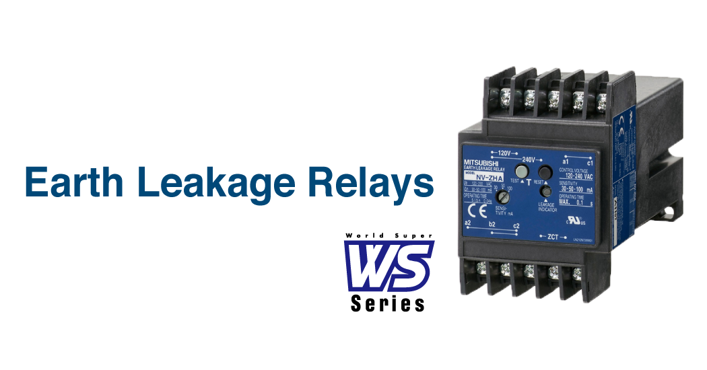
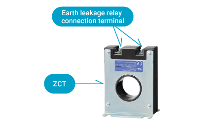
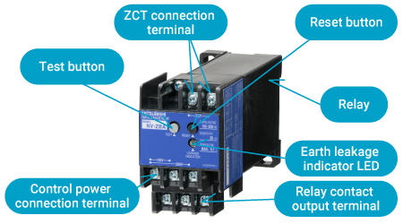
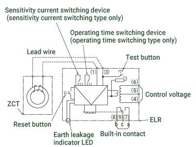
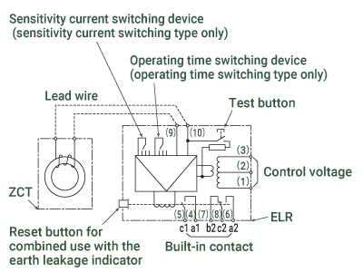
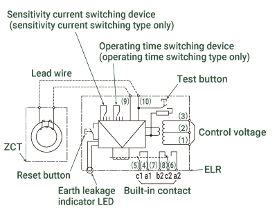
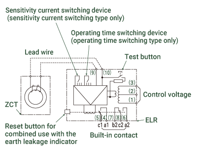
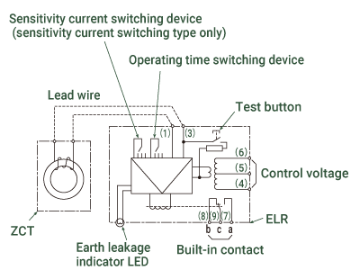

Low-voltage Circuit BreakersEarth Leakage Relays


Earth Leakage Relays
Unlike earth leakage circuit breakers, earth leakage relays do not interrupt, only detect a leakage current.
A ZCT (zero-phase current transformer) is used in combination with a relay. The ZCT detects a leakage current, and then the relay sends a signal.
Structure of an Earth Leakage Relay

ZCT (ZT30B)

Relay (NV-ZBA)
Examples of Possible Uses
- Triggered by the leakage current detection, the leakage alarm can be output and only the relevant devices can be shut down while other devices continues to operate.
- For use in large-capacity main circuits. (To the extent not covered by the earth leakage alarm breaker)
- For use in motor control centers in combination with molded case circuit breakers with high breaking capacity.etc.
| Types and uses | Features and functions | Circuit diagram | |
|---|---|---|---|
| Compatibility | Compact standard model ZBA Series (Electric self-holding type) Ideal for motor control centers with limited space |
|

|
| General-purpose model ZSA Series (Mechanical self-holding type) General-purpose type that can be combined with an MCCB, electromagnetic contactors, etc. to create the desired circuit configuration |
|

|
|
| Harmonic/surge-resistant type ZHA Series (Electric self-holding type) Ideal for leakage current detection in inverter circuits |
|

|
|
| Harmonic/surge-resistant type ZLA Series (Mechanical self-holding type) Ideal for leakage current detection in inverter circuits |
|

|
|
| For leakage alarms ZAA Series (Self-resetting type) Ideal for leakage alarms |
|

|
|
| Earth leakage relay with a primary conductor Ideal for large-capacity circuits |
|
||